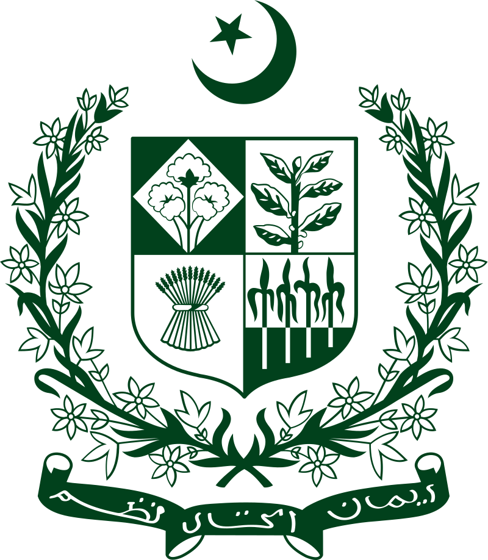
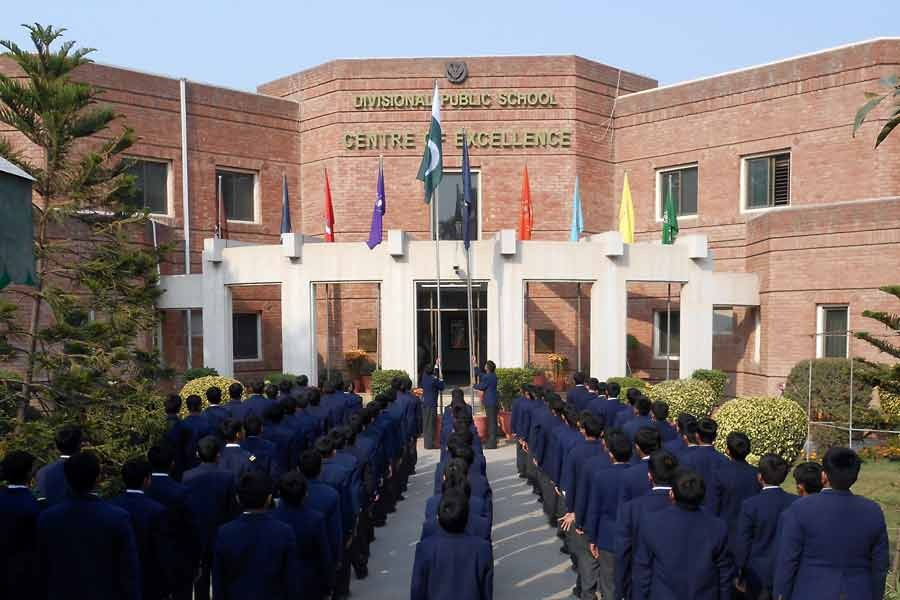
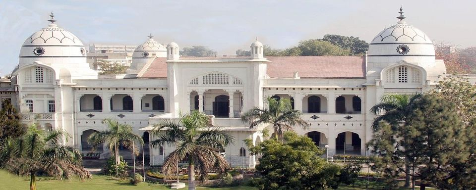
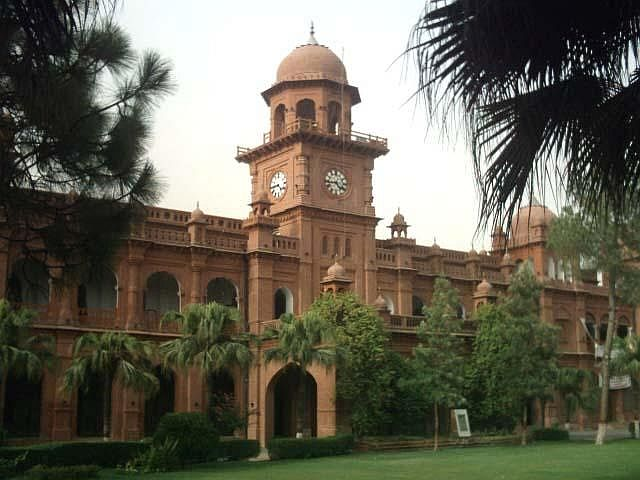

Education
Education in Pakistan is overseen by the Federal Ministry of Education and the provincial governments, whereas the federal government mostly assists in curriculum development, accreditation and the financing of research and development. Article 25-A of the Constitution of Pakistan obligates the state to provide free and compulsory quality education to children of the age group 5 to 16 years. "The State shall provide free and compulsory education to all children of the age of five to sixteen years in such a manner as may be determined by law".
The education system in Pakistan is generally divided into six levels: preschool (for the age from 3 to 5 years), primary (years one to five), middle (years six to eight), high (years nine and ten, leading to the Secondary School Certificate or SSC), intermediate (years eleven and twelve, leading to a Higher Secondary School Certificate or HSSC), and university programs leading to undergraduate and graduate degrees. The Higher Education Commission established in 2002 is responsible for all universities and degree awarding institutes. It was established in 2002 with Atta-ur-Rahman as its Founding Chairman.
Pakistan still has a low literacy rate relative to other countries. As of 2016 Pakistan's literacy rates range from 82% in Islamabad to 23% in the Torghar District. Literacy rates vary by gender and region. In tribal areas female literacy is 9.5%, while Azad Kashmir has a literacy rate of 74%. According to the data, Pakistan faces a significant unemployment challenge, particularly among its educated youth, with over 31% of them being unemployed. Moreover, women account for 51% of the overall unemployed population, highlighting a gender disparity in employment opportunities. Pakistan produces about 445,000 university graduates and 25,000–30,000 computer science graduates per year. As of 2021 Pakistan's population of children not in school (22.8 million children) is the second largest in the world after Nigeria.
Primary Education
Only about 67.5% of Pakistani children finish primary school education. The standard national system of education is mainly inspired from the English educational system. Pre-school education is designed for 3–5 years old and usually consists of three stages: Play Group, Nursery and Kindergarten. After pre-school education, students go through junior school from years 1 to 5. This is followed by middle school from years 6 to 8. At middle school, single-sex education is usually preferred by the community, but co-education is also common in urban cities. The curriculum is usually subject to the institution.
The eight commonly examined disciplines are Arts, Computer Studies and ICT, General Science, Modern Languages (Urdu, English), Mathematics, Religious Education, Social Studies. Some schools also offer drama, music, PE, home economics, astronomy, psychology, archaeology, and anthropology. Provincial languages such as Punjabi, Sindhi, Pashto may also be taught. Foreign languages like German, Turkish, Arabic, Persian, French and Chinese are taught in some institutes.
Secondary Education
Secondary education in Pakistan begins in year 9 and lasts for four years. After end of each of the school years, students are required to pass a national examination administered by a regional Board of Intermediate and Secondary Education (BISE).
Upon completion of year 9, students take SSC-I exams, then SSC-II at the end of year 10. Successful students receive a Secondary School Certificate (Matric). Curriculum includes electives (Biology, Chemistry, Physics, Computer) and compulsory subjects (Math, English, Urdu, Islamiat, Pakistan Studies). Students then move to intermediate college (years 11–12), completing HSSC-I and II. This is called FSc/FA/ICS. Alternatives include O/A Levels, IGCSE, AP, and Technical Education (Matric Tech, DAE).
Tertiary Education
As of 2007, 6% of Pakistanis (9% men, 3.5% women) were university graduates. Plans were made to raise this to 15% by 2020. After HSSC, students may study professional degrees such as engineering, medicine, law, pharmacy, nursing, veterinary sciences, or general degrees (BA, BSc, BCom, BBA). Bachelor’s can be Pass (2 years) or Honors (4 years). Honours degrees specialize in a field (e.g., Biochemistry).
Teacher education programs include Associate degrees, B.Ed (2–4 years), Master’s, and PhD. Training institutes exist nationwide, though criticized for being knowledge-based rather than application-based.